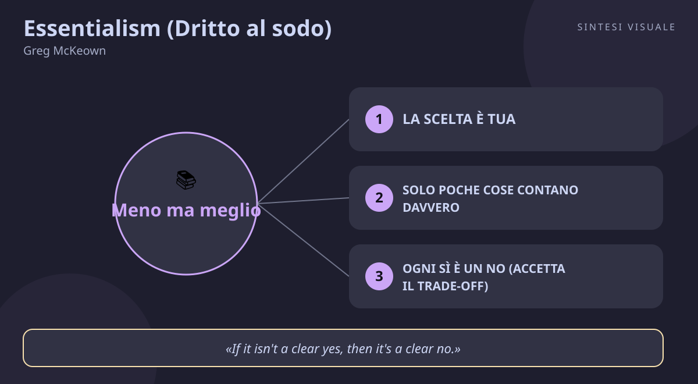

Home / Libri / Essentialism (Dritto al sodo)
Essentialism (Dritto al sodo)
Greg McKeown · Carriera e focus
«Essentialism (Dritto al sodo)»
- Scegli tu
- Pochi contano
- Se non è un sì, è un no
- Sistema facile
🧭Introduzione
Greg McKeown (nato in Inghilterra nel 1977) è consulente di leadership e strategia, fondatore della società McKeown Inc. nella Silicon Valley: ha tenuto corsi e progetti in aziende come Apple, Google, Facebook e Twitter, e ha studiato a Stanford. L'idea del libro gli nacque osservando dirigenti brillanti che, a forza di dire sì a tutto, finivano per dare il meglio in niente — occupatissimi ma mai davvero produttivi. Uscito il 15 aprile 2014 da Crown Business, Essentialism è diventato un bestseller del New York Times, ha superato con il seguito Effortless i 3 milioni di copie ed è stato tradotto in 40 lingue; nell'agosto 2024 ne è uscita un'edizione per il decimo anniversario.
Perché questo libro conta oggi: viviamo nell'epoca delle opportunità infinite — progetti, chat, inviti, corsi, notifiche — e il risultato è paradossale: siamo più occupati che mai e contribuiamo meno che mai. McKeown offre una disciplina sistematica per ribaltare questa trappola: non fare di più in meno tempo, ma fare solo ciò che conta, e farlo benissimo.
A chi è utile: a chi si sente sovraccarico e disperso; a manager e professionisti che devono scegliere dove investire tempo ed energie; a chiunque dica sì per senso di colpa e poi rimpianga di non avere tempo per ciò che conta davvero.
📘Riassunto
La scintilla centrale: perché persone capaci ottengono meno di ciò che potrebbero? Perché provano a fare tutto, e spingere cento palle un centimetro in avanti non equivale a spingerne una al traguardo. Il problema non è la mancanza di impegno, ma l'eccesso di impegni.
La struttura logica procede in tre passi ciclici, dopo la parte sul mindset:
- Esplora e valuta — l'essenzialista valuta più opzioni del non essenzialista, proprio perché poi si impegnerà a fondo solo su pochissime. Serve spazio per pensare, osservazione, gioco e sonno; poi tre domande filtro: cosa mi ispira profondamente? In cosa ho un talento particolare? Quale bisogno importante del mondo incontra?
- Elimina — chiarisci l'intento essenziale (una sola decisione che ne elimina mille), applica criteri estremi di scelta, impara il no elegante, disimpegnati dalle cause perse senza farti fermare dai costi già sostenuti.
- Esegui — crea cuscinetti, rimuovi gli ostacoli, punta su piccole vittorie, costruisci routine: l'esecuzione delle cose essenziali deve diventare quasi senza sforzo, invece di dipendere ogni giorno dalla forza di volontà.
Il punto di svolta: la regola del 90 per cento. Dai a ogni opportunità un voto da 0 a 100 sul criterio più importante: se è sotto il 90, diventa automaticamente zero e la scarti. Se non è un sì chiaro, è un no chiaro. È il momento in cui il lettore capisce che l'essenzialismo non è filosofia ma procedura di scelta.
L'eredità oggi: il libro ha dato un nome — e un metodo — alla lotta contro la cultura del "fai tutto" e dell'essere sempre reperibili. Ha influenzato manager, startup e professionisti della conoscenza, anticipando temi poi ripresi da Newport (Deep Work) e dal minimalismo digitale: meno opzioni, più presenza, contributo più alto.
💡Concetti chiave
- La scelta è tua: o decidi tu dove vanno tempo ed energie, o qualcun altro lo farà al posto tuo.
- Solo poche cose contano davvero: quasi tutto è rumore, pochissimo è vitale — il tuo lavoro è distinguere i due gruppi.
- Ogni sì è un no: non puoi fare tutto; la domanda non è "come faccio a far quadrare tutto?" ma "quale problema voglio risolvere?".
- La regola del 90%: criteri estremi di selezione — se un'opzione non è un sì entusiasta, è un no.
- Il no elegante: dire di no all'impegno non significa dire di no alla persona — separa la decisione dalla relazione.
- Rendi facile l'essenziale: proteggi sonno e margini, rimuovi gli ostacoli, costruisci routine e celebra piccole vittorie.
📖1. La scelta è tua
- Definizione il primo presupposto dell'essenzialista è il controllo percepito: tu — non il capo, i colleghi, i parenti o l'algoritmo — scegli come usare tempo ed energie. Chi si sente vittima ("devo", "non ho scelta") cede ad altri la regia della propria agenda; chi si riconosce la scelta ("scelgo di") torna protagonista.
- Esempio apri la mail la mattina e rispondi a tutto in ordine di arrivo: a pranzo hai lavorato tre ore per le priorità di altri e zero per la tua. L'alternativa essenzialista: decidi tu le prime due ore della giornata prima di aprire la casella.
- Come applicarlo per una settimana annota ogni sera chi ha deciso la tua giornata (tu o gli altri) e in che percentuale. Poi blocca in agenda, come appuntamenti inviolabili, due fasce per le tue priorità — e difendile come difenderesti una visita medica.
- Errore comune confondere "avere scelta" con "poter fare tutto". La scelta non elimina i limiti, li rende visibili: significa decidere a cosa dire di no, non trovare il trucco per fare tutto comunque.
- Collegamento Covey (Le 7 regole per avere successo) e il cerchio di influenza; Epitteto e la distinzione tra ciò che dipende da noi e ciò che non ne dipende.
📖2. Solo poche cose contano davvero
- Definizione la stragrande maggioranza delle opzioni è banale, solo pochissime sono vitali — è la versione esistenziale del principio di Pareto. Il non essenzialista tratta tutto come ugualmente importante; l'essenzialista applica criteri selettivi e concentra le energie dove il contributo può essere massimo.
- Esempio hai dodici "priorità" sul tavolo — corso serale, tre progetti extra, palestra, due chat di volontariato, hobby nuovo. Risultato: avanzi di un millimetro su tutte e non concludi nessuna. L'essenzialista ne sceglie due e le porta in fondo.
- Come applicarlo elenca tutto ciò a cui stai dedicando tempo, poi chiediti per ciascuna voce: "questa attività darà il contributo più alto possibile al mio obiettivo principale?". Tieni solo quelle che superano il test; il resto va eliminato, delegato o congelato.
- Errore comune pensare che "esplorare molte opzioni" significhi "impegnarsi in molte opzioni". McKeown dice l'opposto: esplora tanto, impegnati in poco. Chi salta addosso alla prima occasione non sta esplorando: sta improvvisando.
- Collegamento Pareto e la regola 80/20; Newport (Deep Work) sul lavoro profondo contro quello superficiale; Dieter Rams e il motto "meno, ma meglio" (weniger, aber besser), citato nel libro.
📖3. Ogni sì è un no (accetta il trade-off)
- Definizione non puoi avere tutto né fare tutto: ogni scelta chiude altre strade. Le tre false credenze da abbattere sono "devo fare tutto", "è tutto importante" e "posso fare entrambe le cose". Le tre verità che le sostituiscono: "io scelgo", "solo poche cose contano", "posso fare qualsiasi cosa, ma non ogni cosa".
- Esempio accetti un secondo incarico "tanto sono solo due ore a settimana". Quelle due ore, più le interruzioni e la stanchezza mentale, erodono proprio le ore migliori del progetto che conta. Il costo reale non è nel calendario: è nell'attenzione rubata al tuo contributo più alto.
- Come applicarlo prima di accettare, chiediti "quale problema voglio risolvere?" e "a cosa sto dicendo di no dicendo sì a questo?". Se non sai rispondere, non accettare al volo: prenditi 24 ore e valuta con criteri scritti.
- Errore comune credere che dire sì a tutto sia generosità e dire di no sia egoismo. Spesso è il contrario: chi dice sì a tutto consegna lavoro mediocre a tutti, chi dice pochi sì mirati consegna eccellenza a chi conta.
- Collegamento Warren Buffett e il consiglio di dimezzare la lista delle priorità finché ne resta una; Frankl (L'uomo in cerca di senso) sulla scelta dell'atteggiamento come ultima libertà.
📖4. La regola del 90%
- Definizione per decidere, individua il criterio singolo più importante e dai all'opzione un voto da 0 a 100. Sotto il 90, il voto diventa automaticamente zero: scarta. Se non è un sì chiaro, è un no chiaro. È il filtro che impedisce ai "quasi buoni" di intasare la vita.
- Esempio stai valutando una collaborazione: soldi discreti, tema così così, persone gradevoli ma disorganizzate — gli daresti 70. La regola dice: è uno zero, rifiuta. Se invece il progetto ti entusiasma al 95, accetta e buttati a fondo senza sensi di colpa.
- Come applicarlo definisci per iscritto il tuo criterio principe per le decisioni ricorrenti (lavoro: "questo mi avvicina al mio contributo più alto?"; acquisti: "lo ricomprerei domani allo stesso prezzo?"). Vota ogni opzione, scarta tutto sotto il 90 senza ripensamenti.
- Errore comune abbassare l'asticella "solo per questa volta" perché l'offerta scade o perché dispiace rifiutare. È così che i "sì tiepidi" si accumulano: nessuno è terribile, ma insieme soffocano l'eccellente.
- Collegamento Derek Sivers e la regola "hell yeah or no"; Kahneman (Pensieri lenti e veloci) sugli ancoraggi emotivi che gonfiano i voti tiepidi — per questo il voto va dato per iscritto, prima di parlarne con altri.
📖5. Il no elegante
- Definizione dire di no è una disciplina emotiva, non solo mentale. La tecnica chiave è separare la decisione dalla relazione: prima decidi con chiarezza cosa rifiutare, poi trovi il coraggio e la gentilezza per comunicarlo senza rompere il rapporto. L'essenzialista accetta di non poter piacere a tutti sempre.
- Esempio un collega ti chiede di "dare un'occhiata" alla sua presentazione entro stasera. Invece del sì automatico o del muro ("no, ho da fare"), il no elegante suona così: "non posso farlo bene entro stasera; se va bene la prossima settimana ti dedico un'ora, oppure senti Marco che su questo è più bravo di me".
- Come applicarlo prepara tre frasi-no pronte all'uso ("al momento sono concentrato su X, quindi devo passare", "non posso farlo bene nei tuoi tempi, meglio di no", "se non posso dire sì con convinzione, preferisco dire no subito"). Rispondi entro 24 ore: i no tardivi costano il doppio in colpa e reputazione.
- Errore comune dire un sì vago per evitare il disagio ("vediamo, forse, ti faccio sapere") e poi sparire o consegnare male. Un no chiaro e gentile subito vale più di un sì risentito dopo: le persone rispettano la chiarezza più della disponibilità finta.
- Collegamento Stone, Patton e Heen (Difficult Conversations) sul separare contenuto e relazione; Cialdini sul disagio sociale che ci spinge a dire sì per coerenza e simpatia.
📖6. Rendi facile l'essenziale
- Definizione una volta scelto cosa conta, non affidarti alla forza di volontà: costruisci un sistema che rende l'esecuzione quasi senza sforzo. Gli strumenti sono cuscinetti (margini di tempo imprevisti), rimozione degli ostacoli, routine che automatizzano, piccole vittorie celebrate e — fondamento di tutto — protezione di sonno, gioco e spazio per pensare.
- Esempio vuoi leggere ogni sera ma crolli sul divano col telefono. Sistema essenzialista: telefono in carica in un'altra stanza dalle 21, libro già aperto sul comodino, 20 minuti segnati in agenda. Non serve più "volontà": l'ambiente spinge da solo.
- Come applicarlo per il tuo obiettivo essenziale di questo mese, aggiungi un cuscinetto del 50% ai tempi stimati, elimina un ostacolo fisico (distrazioni, preparativi, passaggi inutili) e definisci la "vittoria minima" quotidiana — così piccola da essere impossibile da mancare — da celebrare ogni sera.
- Errore comune trattare sonno, pause e gioco come premi da meritarsi dopo il lavoro. McKeown li rovescia: sono il carburante del discernimento. Un cervello privato del sonno non distingue più l'essenziale dal rumore, e decide peggio proprio quando dovrebbe decidere meglio.
- Collegamento Clear (Atomic Habits) sul rendere l'abitudine ovvia e facile; Duhigg (Il potere delle abitudini) sulle routine-cue; Sapolsky sul sonno come regolatore dello stress cronico.
💬Citazioni da ricordare
"If you don't prioritize your life, someone else will."
Perché conta: è la frase-manifesto del libro — se non scegli tu, qualcun altro (capo, clienti, algoritmo, parenti) sceglierà per te. Da rileggere ogni volta che la tua agenda sembra scritta da altri.
"Essentialism is not about how to get more things done; it's about how to get the right things done."
Perché conta: corregge il malinteso più diffuso — l'essenzialismo non è produttività estrema né pigrizia nobile, ma saggezza nell'investire tempo ed energie dove rendono di più.
"If it isn't a clear yes, then it's a clear no."
Perché conta: è la regola operativa in una riga — trasforma il vago "ci penso" in una decisione netta e ti libera dai mezzi sì che intasano la vita.
🌍Esempi di oggi
- La chat di lavoro che non finisce mai. Sei in 14 gruppi, rispondi a tutto entro cinque minuti e a sera non hai avanzato sul dossier che conta. L'essenzialista esce dai gruppi non vitali, silenzia le notifiche e dedica le prime due ore al contributo più alto: gli altri riceveranno risposte migliori, solo più tardi.
- L'amico che si iscrive a tre corsi insieme. Inglese, chitarra e fotografia "perché tanto sono serali": dopo un mese molla tutto, esausto e deluso. Con la regola del 90% ne avrebbe scelto uno solo — quello da 95 — e a Natale saprebbe davvero suonare.
- La domenica divorata dagli "ultimi favori". Aiuti il cognato col trasloco, passi in negozio "solo a dare un'occhiata", accetti una call "di cinque minuti": a sera sei svuotato e la settimana parte già in affanno. Un no elegante detto venerdì ("questa domenica la tengo libera per ricaricarmi") protegge le energie di tutti, tue comprese.
🛠️Azioni pratiche
- Fai l'inventario e taglia una cosa. Elenca tutti gli impegni ricorrenti, dai un voto da 0 a 100 a ciascuno sul tuo obiettivo principale e cancella, delega o congela almeno una voce sotto il 90 — quella che ti pesa di più.
- Di' un no elegante entro tre giorni. Scegli una richiesta a cui stavi per dire un sì tiepido e rifiutala con chiarezza e gentilezza, offrendo se possibile un'alternativa ("non io, ma..."). Nota come ti senti dopo: quasi sempre sollevato.
- Costruisci un cuscinetto e una vittoria minima. Per il tuo progetto essenziale, aggiungi il 50% di tempo in più a ogni scadenza di questa settimana e definisci una micro-azione quotidiana impossibile da mancare (15 minuti, una pagina, una telefonata). Celebra ogni sera il fatto di averla fatta.
💎Da portare a casa
Non ti manca il tempo: ti manca il permesso di scegliere a cosa dire di no — e l'essenzialismo è esattamente quel permesso, trasformato in disciplina quotidiana.
💬Approfondimento in chat
Rispondi con il numero di un concetto (1–6) per espanderlo con altri esempi ed esercizi, oppure chiedimi di collegarlo a un tema — carriera, vendite, negoziazione, public speaking, stress, emozioni — e te lo mostro in azione.
🖼️In un colpo d’occhio

Tocca l’immagine per ingrandirla.